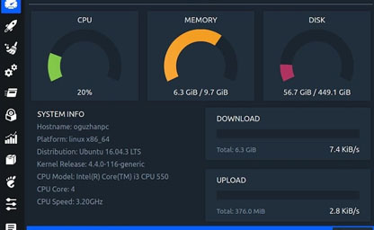
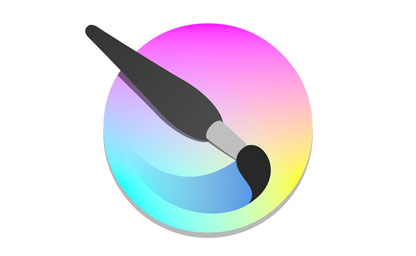

Programas Ubuntu
Algunos de los programas o comandos que mostramos a continuación son más que nada para ayudar con algunas necesidades que se presenten.
Nos puede recomendar algunos programas para subir a nuestra WEB o si encuentra algún problema con algunos links o comandos le agradecemos informar para mantener esta página activa. igual todos los comandos y los link fueron actualizados el 13-06-2022.
Sistema Operativo:
Neofetch
 Neofetch muestra información en el terminal sobre su sistema junto a una imagen, el logotipo de su sistema operativo o cualquier archivo ASCII de su elección.
Neofetch muestra información en el terminal sobre su sistema junto a una imagen, el logotipo de su sistema operativo o cualquier archivo ASCII de su elección.
- actualizamos
- Instalamos neofetch
- Ejecutar neofetch al abrir la terminal
- Abre tu archivo .bashrc
- Ve al final del archivo y agrega esta línea
- - Guarda y cierra (Ctrl + O, luego Enter, y Ctrl + X).
- Aplica los cambios
sudo apt update
sudo apt install neofetch
nano ~/.bashrc
neofetch
source ~/.bashrc
grub customizer
Grub Customizer es una interfaz gráfica para configurar los ajustes y las entradas de menú de GRUB2/BURG
- Actualiza tu sistema:
- Instala Grub Customizer
- Si estás usando una versión de Ubuntu donde no está en los repositorios, puedes agregar el PPA manualmente
- Actualizamos/li>
sudo apt update - instalamos
- Pagina de temas gnome-look.org
- Crear carpeta Themes
- comprobamos que se creo la carpeta
- Extraer y mover el tema a la carpeta themes
- Ej:
sudo cp -R [ruta del tema descargado] /boot/grub/themes/ - Editar el archivo /etc/default/grub
- Buscamos la linea #GRUB_THEME, de no existir hay que crearla. Tiene que quedar asi: GRUB_THEME=/boot/grub/themes/[nombre de la carpeta]/[nombre del archivo de texto dentro de la carpeta]
- Por último actualizamos el grub
sudo apt update
sudo apt install grub-customizer
sudo add-apt-repository ppa:danielrichter2007/grub-customizer
sudo apt install grub-customizer
sudo mkdir /boot/grub/themes
ls /boot/grub
sudo cp -R /home/usuario/Descargas/toshiba /boot/grub/themes/
sudo nano /etc/default/grub
GRUB_THEME=/boot/grub/themes/toshiba/theme.txt
sudo update-grub
Bleachbit
 BleachBit es una herramienta gratuita y de código abierto para ayudarlo a deshacerse de los archivos basura en su máquina . Es potente y fácil de usar, lo que le permite no solo eliminar archivos basura, sino también triturar y borrar archivos.
BleachBit es una herramienta gratuita y de código abierto para ayudarlo a deshacerse de los archivos basura en su máquina . Es potente y fácil de usar, lo que le permite no solo eliminar archivos basura, sino también triturar y borrar archivos.
- En la Termina
- Instalamos
sudo apt update
sudo apt install bleachbit
Google Chrome
Google Chrome es un navegador web de código cerrado desarrollado por Google
- Desde terminal
- Instala el paquete .deb de Google Chrom
- el sistema buscará e instalará automáticamente los paquetes que faltan
wget https://dl.google.com/linux/direct/google-chrome-stable_current_amd64.deb
sudo dpkg -i google-chrome-stable_current_amd64.deb
sudo apt -f install
Chromium
Chromium es una base de código abierto para desarrollar un navegador web, mantenida por diversas compañías que posteriormente usan el código fuente para crear su propia versión de navegador con características adicionales
- Usando Snap (recomendado por Ubuntu)
- Esto instalará la versión oficial y se actualizará automáticamente
sudo snap install chromium
Okular | PDF
 Foxit Reader es un lector PDF multilingüe. Tanto la versión completa, como la básica pueden descargarse gratis. Este software es notable por su corto tiempo para cargar y el tamaño pequeño de sus archivos. Ha sido favorablemente comparado con Adobe Reader. No puede leer archivos PDX.
Foxit Reader es un lector PDF multilingüe. Tanto la versión completa, como la básica pueden descargarse gratis. Este software es notable por su corto tiempo para cargar y el tamaño pequeño de sus archivos. Ha sido favorablemente comparado con Adobe Reader. No puede leer archivos PDX.
- En la Terminal
- instalamos
sudo apt update
sudo apt install okular
Codecs y software de terceros
 Si no se instalan desde la instalacion de ubuntu o para actualizar. Los códecs de vídeo más populares actualmente son Theora, VP8, MPEG-2, h. 264, Xvid y Divx. Respecto a los códecs de audio: AAC, FLAC, MP3, Vorbis (ogg) y WMA son los que más abundan. Los contenedores más utilizados son AVI, Divx, Matroska, Flash video, MP4, MPEG, Ogg, Quicktime, MXF y WebM.
Si no se instalan desde la instalacion de ubuntu o para actualizar. Los códecs de vídeo más populares actualmente son Theora, VP8, MPEG-2, h. 264, Xvid y Divx. Respecto a los códecs de audio: AAC, FLAC, MP3, Vorbis (ogg) y WMA son los que más abundan. Los contenedores más utilizados son AVI, Divx, Matroska, Flash video, MP4, MPEG, Ogg, Quicktime, MXF y WebM.
- Desde una Terminal
- Instalamos
sudo apt update
sudo apt install ubuntu-restricted-extras
Gnome Tweak tool
GNOME Tweak Tool es una herramienta para habilitar la personalización de opciones avanzadas para GNOME3. GNOME Tweak Tool permite el ajuste de varias opciones avanzadas de GNOME que no pueden configurarse en gnome-control-center. (Tener más ajustes en la apariencia y configuraciones de Gnome)
- Desde una Terminal
- Instalamos
- Para aprovechar al máximo Tweaks, puedes instalar
sudo apt update
sudo apt install gnome-tweaks
sudo apt install gnome-shell-extensions
VLC
 VLC media player es un reproductor y framework multimedia, libre y de código abierto desarrollado por el proyecto VideoLAN.
VLC media player es un reproductor y framework multimedia, libre y de código abierto desarrollado por el proyecto VideoLAN.
- Desde una Terminal
- Instalamos
- Listo
sudo apt update
sudo apt install vlc
Audacious
 Audacious es un reproductor de audio disponible como software libre para sistemas POSIX, como por ejemplo, GNU/Linux
Audacious es un reproductor de audio disponible como software libre para sistemas POSIX, como por ejemplo, GNU/Linux
- Desde una Terminal
- Instalamos
- También puedes instalar el paquete audacious-plugins para ampliar funcionalidades
sudo apt update
sudo apt install audacious
sudo apt install audacious-plugins
Comprimir y Descomprimir archivos
 Los archivos comprimidos (comprimidos) ocupan menos espacio de almacenamiento y se pueden transferir a otros equipos más rápidamente que archivos sin comprimir.
Los archivos comprimidos (comprimidos) ocupan menos espacio de almacenamiento y se pueden transferir a otros equipos más rápidamente que archivos sin comprimir.
- Desde una Terminal
- Listo
sudo apt install rar unace p7zip p7zip-full p7zip-rar unrar lzip lhasa arj sharutils mpack lzma lzop cabextract
Balena etcher(Probar de otro)
 balenaEtcher es un utilitario libre y de código abierto que se utiliza para escribir archivos de imagen, como archivos .iso y .img, así como carpetas comprimidas en medios de almacenamiento para crear tarjetas de memoria SD Live y unidades flash USB.
balenaEtcher es un utilitario libre y de código abierto que se utiliza para escribir archivos de imagen, como archivos .iso y .img, así como carpetas comprimidas en medios de almacenamiento para crear tarjetas de memoria SD Live y unidades flash USB.
- Descargar desde la Pagina Web Official balena.io
- Hazlo ejecutable
- Ejecuta el programa
chmod +x balenaEtcher-*.AppImage
./balenaEtcher-*.AppImage
Caffeine indicator
 Caffeine es un applet indicador simple en el panel de Ubuntu que permite prevenir temporalmente la activación del protector de pantalla, bloqueo de pantalla
Caffeine es un applet indicador simple en el panel de Ubuntu que permite prevenir temporalmente la activación del protector de pantalla, bloqueo de pantalla
- Desde la Terminal
sudo apt install caffeine
Sound converter
Sound converter es una aplicación designada para convertir archivos de audio de un formato a otro guardándalos en el disco duro del ordenador. Es posible convertir entre los siguientes formatos de audio: MP3, MP2, MP+, Ogg Vorbis, AAC, M4A, AMR, WMA, WAV, ADPCM, FLAC.
- Desde la Terminal
sudo apt install soundconverter
Curlew
 Curlew es un convertidor multimedia de código abierto, gratuito y fácil de usar para Linux. Está escrito en Python y GTK3 y depende de FFmpeg o Libav .
Curlew es un convertidor multimedia de código abierto, gratuito y fácil de usar para Linux. Está escrito en Python y GTK3 y depende de FFmpeg o Libav .
- Descarga el paquete comprimido
- Extrae el contenido
- Entra al directorio extraído
- Busca el nombre exacto de la carpeta y entra con
- Da permisos de ejecución
- Ejecuta Curlew
wget https://sourceforge.net/projects/curlew/files/latest/download -O curlew.tar.gz
tar -xvf curlew.tar.gz
ls
cd curlew
chmod +x curlew
./curlew
gparted
 GParted es un editor de particiones para el entorno de escritorio GNOME. Esta aplicación es usada para crear, eliminar, redimensionar, inspeccionar y copiar particiones, como también los sistemas de archivos que se encuentran en ellas.
GParted es un editor de particiones para el entorno de escritorio GNOME. Esta aplicación es usada para crear, eliminar, redimensionar, inspeccionar y copiar particiones, como también los sistemas de archivos que se encuentran en ellas.
- Desde la Terminal
sudo apt install gparted
Glances
Monitor técnico en tiempo real, Muestra uso de CPU, RAM, disco, red, procesos, sensores, etc.
- Desde la Terminal
sudo apt install glances glances
k3b
 K3b es una de las interfaces gráficas más completas que existen para la grabación de discos compactos y DVD bajo los sistemas operativos GNU/Linux y FreeBSD. Utiliza, entre otros, los programas cdrecord y cdrdao, y las bibliotecas de KDE.
K3b es una de las interfaces gráficas más completas que existen para la grabación de discos compactos y DVD bajo los sistemas operativos GNU/Linux y FreeBSD. Utiliza, entre otros, los programas cdrecord y cdrdao, y las bibliotecas de KDE.
- Desde la Terminal
- Esto instalará K3b junto con sus dependencias. Si quieres soporte completo para formatos multimedia, también puedes instalar
- update
sudo apt install k3b
sudo add-apt-repository universe
sudo apt update
MenuLibre
MenuLibre es un aplicación con la que podrás editar menús en Linux Mint y Ubuntu, modificando no solo el propio menú, sino también los lanzadores que hay en tu equipo, de forma muy detallada. Pero además tiene la cualidad de presentar una interfaz sencilla, limpia y sobre todo fácil de usar.
- Para Instalar
sudo apt install menulibre
Stacer
Según sus propios creadores, Stacer» es un software optimizador de sistema de código abierto y un monitor de aplicaciones que ayuda a los usuarios a administrar todo el sistema con diferentes aspectos, es una utilidad del sistema todo en uno.
- Comando para Instalar
sudo apt install stacer
jDownloader 2
 Es un gestor de descargas de código abierto escrito en Java. Permite la descarga automática de archivos de sitios de alojamiento inmediato como MediaFire y MEGA, entre otros.
Es un gestor de descargas de código abierto escrito en Java. Permite la descarga automática de archivos de sitios de alojamiento inmediato como MediaFire y MEGA, entre otros.
- Update
- Instalamos snapd
- instalamos
sudo apt update
sudo apt install snapd
sudo snap install jdownloader2
OBS Studio
 Open Broadcaster Software está escrito en C y C++, y permite captura de fuentes de video en tiempo real, composición de escena, codificación, grabación y retransmisión. La transmisión de datos puede realizarse a través del protocolo Real Time Messaging Protocol (RTMP), y puede ser enviado a cualquier destino que soporte RTMP (por ejemplo Youtube), incluyendo muchos presets para sitios de streaming como Twitch, Admefy y DailyMotion. Pagina Web Official jdownloader.org
Open Broadcaster Software está escrito en C y C++, y permite captura de fuentes de video en tiempo real, composición de escena, codificación, grabación y retransmisión. La transmisión de datos puede realizarse a través del protocolo Real Time Messaging Protocol (RTMP), y puede ser enviado a cualquier destino que soporte RTMP (por ejemplo Youtube), incluyendo muchos presets para sitios de streaming como Twitch, Admefy y DailyMotion. Pagina Web Official jdownloader.org
- la versión más reciente desde el PPA oficial
- Update al directorio
- instalamos
sudo add-apt-repository ppa:obsproject/obs-studio
sudo apt update
sudo apt install obs-studio
FileZilla
 FileZilla es una aplicación FTP libre y de código abierto que consta de un cliente y un servidor. Soporta los protocolos FTP, SFTP y FTP sobre SSL/TLS.
FileZilla es una aplicación FTP libre y de código abierto que consta de un cliente y un servidor. Soporta los protocolos FTP, SFTP y FTP sobre SSL/TLS.
- Para instalar
sudo apt install filezilla
Inkscape
 Inkscape es un editor de gráficos vectoriales libre y de código abierto. Inkscape puede crear y editar diagramas, líneas, gráficos, logotipos, e ilustraciones complejas. El formato principal que utiliza el programa es Scalable Vector Graphics versión 1.1. Pagina Web Official inkscape.org
Inkscape es un editor de gráficos vectoriales libre y de código abierto. Inkscape puede crear y editar diagramas, líneas, gráficos, logotipos, e ilustraciones complejas. El formato principal que utiliza el programa es Scalable Vector Graphics versión 1.1. Pagina Web Official inkscape.org
- Para Instalar
sudo apt install inkscape
krita
Krita es el software de pintura digital e ilustración basado en las bibliotecas de la plataforma KDE e incluido en Calligra Suite. Diseñado como una suite de dibujo e ilustración digital, Krita es software libre distribuido bajo la licencia GNU GPL. Pagina Web Official linuxhint.com
- Para Instalar
sudo apt install krita
Android Studio
 Android Studio es el entorno de desarrollo integrado oficial para la plataforma Android. Fue anunciado el 16 de mayo de 2013 en la conferencia Google I/O, y reemplazó a Eclipse como el IDE oficial para el desarrollo de aplicaciones para Android. La primera versión estable fue publicada en diciembre de 2014.
Android Studio es el entorno de desarrollo integrado oficial para la plataforma Android. Fue anunciado el 16 de mayo de 2013 en la conferencia Google I/O, y reemplazó a Eclipse como el IDE oficial para el desarrollo de aplicaciones para Android. La primera versión estable fue publicada en diciembre de 2014.
- Instalacion automatica
- Instalamos smapd
- Instalamos android
sudo apt install snapd
sudo snap install android-studio --classic
- Descargar desde la Pagina Web Official developer.android.com
- Extrae el archivo .zip y ejecuta el instalador
- Buscamos la ruta
- Ejecutamos el instalador
cd android-studio/bin
./studio.sh
NetBeans
 NetBeans es un entorno de desarrollo integrado libre, hecho principalmente para el lenguaje de programación Java. Existe además un número importante de módulos para extenderlo. NetBeans IDE es un producto libre y gratuito sin restricciones de uso. Pagina Web Official netbeans.apache.org
NetBeans es un entorno de desarrollo integrado libre, hecho principalmente para el lenguaje de programación Java. Existe además un número importante de módulos para extenderlo. NetBeans IDE es un producto libre y gratuito sin restricciones de uso. Pagina Web Official netbeans.apache.org
- Instalar netbeans
- Listo
sudo snap install netbeans --classic
Visual Studio Code
Microsoft Visual Studio es un entorno de desarrollo integrado para Windows y macOS. Es compatible con múltiples lenguajes de programación, tales como C++, C#, Visual Basic.
- En una terminal
sudo snap install --classic code
GitHub
 GitHub es una forja para alojar proyectos utilizando el sistema de control de versiones Git. Se utiliza principalmente para la creación de código fuente de programas de ordenador. El software que opera GitHub fue escrito en Ruby on Rails. Desde enero de 2010, GitHub opera bajo el nombre de GitHub, Inc. Pagina Web Informacion ubunlog.com
GitHub es una forja para alojar proyectos utilizando el sistema de control de versiones Git. Se utiliza principalmente para la creación de código fuente de programas de ordenador. El software que opera GitHub fue escrito en Ruby on Rails. Desde enero de 2010, GitHub opera bajo el nombre de GitHub, Inc. Pagina Web Informacion ubunlog.com
- Descargar el intalador
- Instalar Archivos .deb
- Para resolver dependencias
sudo wget https://github.com/shiftkey/desktop/releases/download/release-2.8.1-linux2/GitHubDesktop-linux-2.8.1-linux2.deb
sudo dpkg -i GitHubDesktop-linux-*.deb
sudo apt -f install
Wine
es una capa de compatibilidad libre que permite ejecutar aplicaciones diseñadas para Windows en sistemas operativos Linux, macOS y otros basados en Unix
- Añadir soporte para arquitectura de 32 bits
- actualizar
- Instalar dependencias necesarias
- Instalar Wine sin usar el repositorio externo
sudo dpkg --add-architecture i386
sudo apt update
sudo apt install -y software-properties-common wget gnupg2
sudo apt install -y wine64 wine32
Discord
es una plataforma de comunicación libre y multiplataforma que combina chat de texto, voz y video
- Desde la Terminal
sudo snap install discord
Telegram
es una plataforma de mensajería rápida, segura y multiplataforma, ideal para comunicación técnica, automatización y gestión de comunidades
- Desde la Terminal
sudo snap install telegram-desktop
VirtualBox
es una herramienta de virtualización libre y multiplataforma que te permite ejecutar sistemas operativos completos como máquinas virtuales dentro de tu sistema principal
- Desde la Terminal
- Intalar
sudo apt update
sudo apt install virtualbox
LibreOffice
LibreOffice es un poderoso paquete de oficina. Su interfaz limpia y sus potentes herramientas permiten dar rienda suelta a tu creatividad
- Desde la Terminal
sudo apt install libreoffice